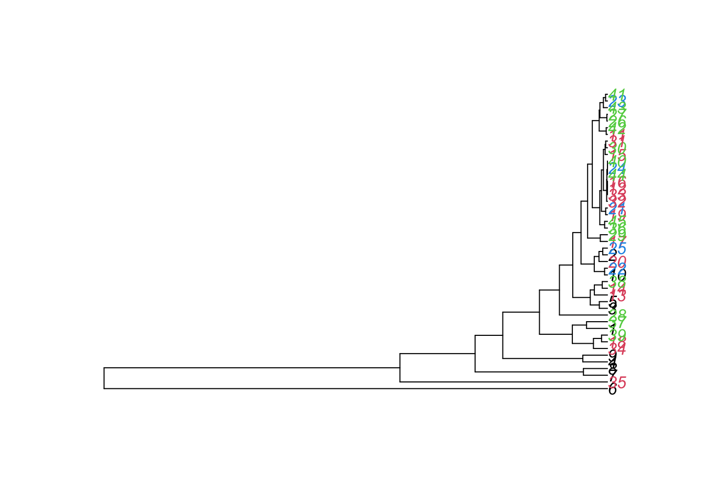

dat = read.table(file = "http://evol.bio.lmu.de/_statgen/Multivariate/11SS/RIKZGroups.txt", header = T)
head(dat)Exercise - Multivariate statistics
In this exercise you will practice analyzing multivariate datasets using:
- ordination methods which explore higher-order correlations among variables and similarities between observations
- clustering methods which aggregate individual observations into clusters.
Useful functions for multivariate data analyses
pairs() - create pairplot (plot all variables against each other)
prcomp() - calculate PCA
plot(pca_object) - plot variance explained by PC axes
biplot() - plot PCA
metaMDS() - calculate NMDS
ordiplot(nmds_object) - plot NMDS
dist() - create distance matrix
hclust() - perform hierarchical clustering; apply to distance matrix
plot(as.phylo(hc_object)) - plot dendrogram from hclust output
kmeans() - perform kmeans non-hierarchical clustering; access cluster assignments using kmeans_object\$cluster
Background on the dataset
Marine coastal ecosystems harbor the most productive and diverse communities on Earth. However, they are extremely vulnerable to climate change and human activities (such as landclaim, pollution, recreation purposes, …) As a consequence, the performance of this ecosystem has decreased considerably. To better understand these ecosystems, the dutch governmental institute (RIKZ: Rijksinstituut voor Kust en Zee) started a research project on sandy beaches to investigate the relationship between environmental factors and how they might affect benthic fauna. (from the LMU and Zuur, Ieno, Smith (2007), Chapter 12.8-12.10 and 27)
Question
We now want to use ordination methods to explore
- the variability in environmental conditions
- the variability in species richness
We also want to use clustering methods to define 3 environmental types and hierarchically cluster the samples with respect to their species richness.
Dataset
Read in the dataset as follows:
You already know the functions str() and summary() to get an overview of a dataset and to see which variables the dataset contains.
- columns 2:5 is species richness within four larger faunal groups
- columns 7:16 are different environmental variables
Not important for us are:
- column 6 (week), a time stamp
- column 17 (sorting1), variable from the observational design
Let’s get into the analysis!
Unconstrained ordination (PCA)
Carry out the following analyses:
- Make two PCAs, one for the environmental and one for the species richness data (see columns above).
- Name the results
pca_environmentandpca_species. - Create a biplot for each PCA.
- Create a barplot for the proportion of variance explained by each component.
For example, the result for species richness should look like this:
You need the following functions and the package vegan:
prcomp()biplot()
barplot()summary()
library(vegan)Hints
- Don’t forget to scale the variables in the PCA.
- In order to get the proportion of the explained variance, have a look at the summary of your analysis.
str()shows you what the summary contains. You want to specifically look at theimportance, here the second row contains the proportion of variance of all components. So what we want to plot is:summary(pca_species)$importance[2,]. - Don’t forget to give your plots a title.
Now, use your results to answer the following questions:
1. Task
1. In which multivariate dataset do the first and second components explain more variance?
## 1.) Conduct the principle component analyses (PCAs):
# a) PCA of environmental data
pca_environment = prcomp(dat[,7:16], scale = T)
summary(pca_environment)
## Importance of components:
## PC1 PC2 PC3 PC4 PC5 PC6 PC7
## Standard deviation 1.8476 1.3300 1.0919 1.0297 0.99521 0.7746 0.72784
## Proportion of Variance 0.3414 0.1769 0.1192 0.1060 0.09904 0.0600 0.05298
## Cumulative Proportion 0.3414 0.5182 0.6375 0.7435 0.84254 0.9025 0.95551
## PC8 PC9 PC10
## Standard deviation 0.52299 0.34727 0.22541
## Proportion of Variance 0.02735 0.01206 0.00508
## Cumulative Proportion 0.98286 0.99492 1.00000
op <- par(mfrow = c(1,2))
biplot(pca_environment, main = "PCA") # plot the results of the PCA as a rotation matrix
barplot(summary(pca_environment)$importance[2,], # get the importance measure
main = "Components of environment",
ylab = "Proportion of variance explained")
# b) PCA of species richness data
pca_species = prcomp(dat[,2:5], scale = T)
summary(pca_species)
## Importance of components:
## PC1 PC2 PC3 PC4
## Standard deviation 1.1177 1.0251 1.0095 0.8251
## Proportion of Variance 0.3123 0.2627 0.2548 0.1702
## Cumulative Proportion 0.3123 0.5750 0.8298 1.0000
biplot(pca_species, main = "PCA") # plot the results of the PCA as a rotation matrix
barplot(summary(pca_species)$importance[2,], # get the importance measure
main = "Components of species",
ylab = "Proportion of variance explained")
par(op)From the summary() output we can see that the first and second components explain more variance in the species PCA.
2. Task
- What are the two samples that have the highest score on the respective third PCA axes?
# -> order the samples by their PC3 coordinate:
order(pca_environment$x[,'PC3'], decreasing = T) # -> 24 is highest
## [1] 24 21 23 28 25 16 22 40 36 19 8 12 6 30 9 7 39 32 44 1 15 4 31 13 14
## [26] 5 10 35 37 45 27 20 18 34 11 17 26 29 38 3 41 33 2 42 43
order(pca_species$x[,'PC3'], decreasing = T) # -> 7 is highest
## [1] 7 8 6 1 37 5 13 3 35 4 14 38 11 42 29 39 28 43 2 45 26 34 17 27 36
## [26] 18 20 15 23 30 41 21 19 31 12 16 33 25 32 24 40 44 22 10 9
3. Task
- From looking at the biplot: Which environmental variables would you choose, if you have only the resource to measure three variables?
biplot(pca_environment);
abline(v=0, lty="dashed");abline(h=0, lty="dashed")From looking at the biplot, we choose 3 variables that describe a lot of variation (i.e. have a large length in the biplot) and have little correlation with others. An appropriate choice would be salinity, penetrability and grain size.
4. Task
- Describe the following correlations:
- salinity and humus
- angle1 and exposure
- Polychaeta and Mollusca
We can get information on the correlations of variables by looking at their representation in the biplot:
salinity and humus: same direction -> positively correlated
angle1 and exposure: opposite directions -> negatively correlated
Polychaeta and Mollusca: almost perpendicular -> uncorrelated
Clustering
K-means
We want to use clustering methods to define 3 environmental types. Use the function kmeans() with centers = 3 (number of clusters to be generated).
Caution
Remember to set a seed: the choice of the first k centers is random.
set.seed(467456)
cl = #...Compare the three clusters with the result of the PCA using the following code that uses another plotting framework called ggplot2:
library(ggfortify)
autoplot(pca_environment, colour = cl$cluster, size = 2,
loadings = TRUE, loadings.colour = 'black',
loadings.label = TRUE, loadings.label.size = 3,
loadings.label.colour = "black")The colors of the points represent the three clusters.
Answer the following questions:
1. Task
- How is it possible that four observations in the middle (in red - if you have used the same seed) belong to a different cluster than the observations around them (in black)?
# Create clusters using all environmental variables
set.seed(467456)
cl <- kmeans(dat[,7:16], centers = 3) # 3 clusters to be generated
# Plot
library(ggfortify)
autoplot(pca_environment, colour = cl$cluster, size = 2,
loadings = TRUE, loadings.colour = 'black',
loadings.label = TRUE, loadings.label.size = 3,
loadings.label.colour = "black")To understand why the four observations in the middle belong to a different cluster than the observations around them, we must take into account, that the biplot is only a 2-dimensional representation of a more-than-2 dimensional space. Therefore, the four points in the middle will be dissimilar to the points around them with respect to a variable that is not well represented by the first two PCA axes.
2. Task
- Which environmental variables are on average high within the black cluster (cluster 1)?
Environmental variables that are on average high within cluster 1: looking at the plot we find that exposure and grain size are high on average within cluster 1
Hierarchical clustering
Now we want to hierarchically cluster the samples with respect to their species richness, as shown in the following plot:
Create the same plot using the functions:
hclust()
plot()as.phylo()
Load the package ape. Have a look at the help for hclust() to read what the function does and look at the examples for further help on how to use the function. Then have a look at what the function as.phylo() does. Now, color the labels using the variable week. You can do this using the argument “tip.color =”.
1. Task
Which of the following statements are correct? (could be more than 1)
Hint: To be able to read the plot more easily, you can click Zoom in the top pane of the Plots window in RStudio.
library(ape)
hc = hclust(dist(dat[, 2:5]))
plot(as.phylo(hc), tip.color = dat$week)